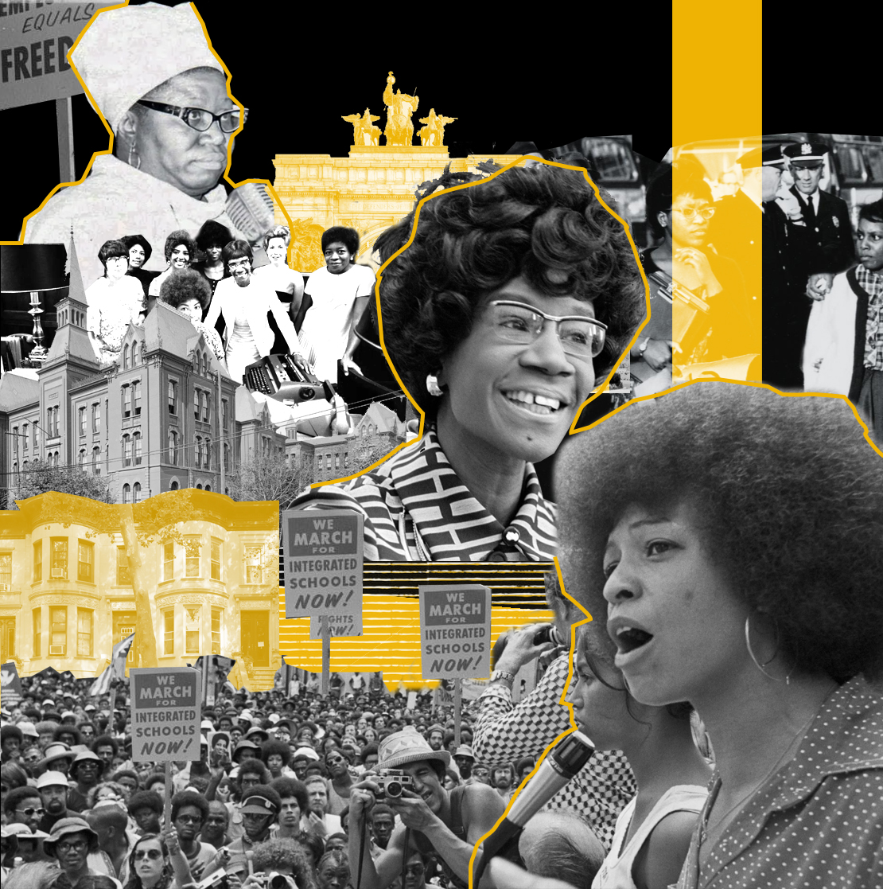
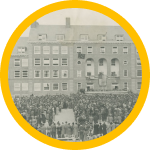
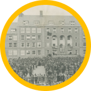
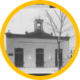
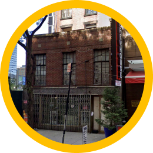
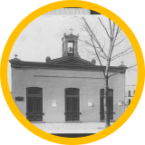
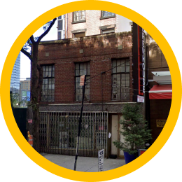

Paths to Power
Spotlight on Black Women in the Civil Rights Era


Shirley Chisholm was born in Brooklyn and became the first Black woman elected to the U.S. Congress in 1968, representing her home borough. She used her platform to advocate for civil rights, economic justice, and better housing and healthcare for her constituents in central Brooklyn.
Mae Mallory lived in Brooklyn during her work for school desegregation and housing rights in the 1950s and 1960s. She organized with parents and community leaders in Bedford-Stuyvesant, challenging the unequal education system and advocating for improved conditions in local schools.
Elsie Richardson was a lifelong Bedford-Stuyvesant resident and co-founder of the Central Brooklyn Coordinating Council (CBCC), focusing on urban renewal and community development. She helped establish the Bedford-Stuyvesant Restoration Corporation, advocating for economic opportunities, better housing, and education for Brooklyn’s Black community.



 

 




28 Virginia Place, Crown Heights
Shirley Chisholm lived here in Brooklyn and became the first Black woman elected to the U.S. Congress in 1968, representing her home borough. She used her platform to advocate for civil rights, economic justice, and better housing and healthcare for her constituents in central Brooklyn.


Mae Mallory lived in Brooklyn during her work for school desegregation and housing rights in the 1950s and 1960s. She organized with parents and community leaders in Bedford-Stuyvesant, challenging the unequal education system and advocating for improved conditions in local schools.
Shirley graduated in 1942. She was vice president of the Junior Arista Honor City, rare as most Black girls were not steered into honors programs. She graduated with an academic diploma and a medal of excellence in French.
Shirley's husband Conrad Chisholm bought the building in 1972, the same year that Shirley ran for President, and converted it into an event space and club house called Club 1149. It was a meeting place for political clubs and speakers, and a social gathering space.
The site of Shirley Chisholm’s victory celebration after winning her historic election to Congress in 1968. This marked Chisholm as the first Black woman elected to the U.S. House of Representatives. Shirley used this space for political rallies and press conferences.
Alice (1858-1937) was a member of this church. She founded the Empire State Federation of Women's Clubs and was one of the leading builders of the Brooklyn NAACP Chapter. Shirley Chisholm was affiliated to NAACP, among other organizations.